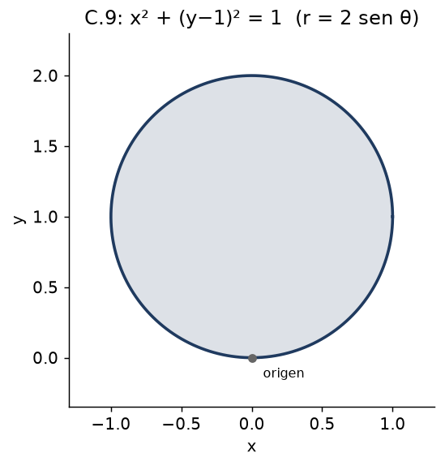

Universidad Nacional de Colombia, Departamento de Matemáticas
Bitácora de Cálculo en Varias Variables
Segundo corte, 2026-2S · Integración múltiple. Carlos Javier Cuervo Baracaldo · Ingeniería de Sistemas
Índice de ejercicios
Los 19 ejercicios que escogí de la hoja del segundo corte (banco de 64, con actualización del 21 de octubre de 2026), por los bloques A a F. Todos llevan la marca ⋆ de la hoja. Cada entrada responde las cuatro preguntas del taller: qué región o sólido es, cómo se recorre, qué sistema de coordenadas conviene y qué se obtiene. El planteamiento es la mitad de la nota de este corte, y por eso el dibujo y los límites van antes que la cuenta.
Son 19 y no 18: la meta A2·B4·C4·D2·E4·F2 dejaría fuera B.15, y B.15 es el reflejo de B.6 ($e^{x^2}$ tampoco tiene primitiva) con los papeles de $x$ e $y$ cambiados. De lo demás, las cuatro entradas especiales van sobre la meta: cambio de orden (B.9), polares (C.9), describir un sólido (E.2) y elegir coordenadas (F.4).
La página sigue el formato del primer corte, inspirada en los apuntes abiertos del MIT. El contenido se apoya en las diapositivas de las semanas 7 a 11 y en las clases transcritas con WhisperX. Las integrales quedaron verificadas con SymPy antes de escribirlas, y las regiones y sólidos, con matplotlib.
Enunciado. Sea $R = [0,1] \times [0,2]$. Evalúe $\displaystyle\iint_R x e^y \, dA$ en los dos órdenes posibles y compruebe que obtiene el mismo resultado.
Procedimiento
El rectángulo es el único caso donde los límites no dependen de la variable de afuera, y por eso el orden queda libre.
$$\int_0^2 \int_0^1 x e^y \, dx\, dy = \int_0^2 e^y \cdot \tfrac{1}{2}\, dy = \tfrac{1}{2}(e^2 - 1).$$
Cae el mismo valor en los dos órdenes. El integrando se puede factorizar como $x \cdot e^y$, y esa forma separada es la que hace que las dos cuentas lleguen al mismo sitio.
Respuesta
$\displaystyle\iint_R x e^y \, dA = \dfrac{e^2 - 1}{2} \approx 3{,}19.$
Bloque B. Regiones de integración y cambio de orden
3. B.1, Región entre la parábola y la recta
Tipo: región. Primero el dibujo.
Enunciado. Sea $D$ la región limitada por $y = x^2$ y $y = 2x$. Bosqueje $D$ y evalúe $\displaystyle\iint_D x \, dA.$
Procedimiento
Intersecciones. $x^2 = 2x \Rightarrow x(x-2) = 0 \Rightarrow x = 0,\ 2$. Los puntos son $(0,0)$ y $(2,4)$.
Quién cierra arriba. Entre 0 y 2 la recta va por encima de la parábola, $2x \ge x^2$. La región es de tipo I: $0 \le x \le 2$, $x^2 \le y \le 2x$.
$D$: la recta manda por arriba, la parábola por abajo, entre $(0,0)$ y $(2,4)$.
Respuesta
$\displaystyle\iint_D x \, dA = \dfrac{4}{3}.$
4. B.4, Cambiar el orden sin evaluar
Tipo: cambio de orden. Método antes que cuenta.
Enunciado. Dibuje la región y cambie el orden de integración: $\displaystyle\int_0^1 \int_x^1 f(x,y)\, dy\, dx.$ No es necesario evaluar.
Procedimiento
Leer la región desde los límites como vienen. $0 \le x \le 1$ y, para cada $x$, $x \le y \le 1$. Es el triángulo de vértices $(0,0)$, $(0,1)$ y $(1,1)$, apoyado sobre el eje $y$ con hipotenusa $y = x$.
Escribirla desde el otro lado. Con $y$ como variable de afuera, $0 \le y \le 1$. Fijada $y$, la $x$ corre de $x = 0$ a la recta $x = y$:
$$\int_0^1 \int_0^y f(x,y)\, dx\, dy.$$
Aquí no toca partir: el borde derecho es una sola recta, $x = y$, y ni el techo ni el piso cambian de fórmula en ningún punto.
Tipo: cambio de orden con integrando no integrable.
Enunciado. Evalúe, cambiando primero el orden de integración: $\displaystyle\int_0^1 \int_x^1 e^{y^2} \, dy\, dx.$
Procedimiento
Por qué este orden no funciona. $e^{y^2}$ no tiene primitiva elemental, así que la integral de adentro no se puede hacer como está. El enunciado lo pide invertido a propósito.
La región. $0 \le x \le 1$, $x \le y \le 1$. El triángulo de B.4 otra vez, con vértices $(0,0)$, $(0,1)$ y $(1,1)$. Invertido queda $0 \le y \le 1$, $0 \le x \le y$.
Enunciado. Cambie el orden de integración en $\displaystyle\int_0^1 \int_y^{2-y} f(x,y)\, dx\, dy.$ La nueva descripción requiere separar la región en dos partes.
Procedimiento
La región como viene dada. $0 \le y \le 1$, y para cada $y$, $y \le x \le 2 - y$. El piso es la recta $x = y$, o sea $y = x$, y el techo es $x = 2 - y$, o sea $y = 2 - x$. Se cortan donde $x = 2 - x$, punto $(1,1)$.
Los tres vértices. En $y = 0$ la izquierda da $x = 0$ y la derecha $x = 2$; el tercer vértice es el cruce $(1,1)$. La región es el triángulo de $(0,0)$, $(2,0)$ y $(1,1)$.
En qué se enreda uno al invertir. Con $x$ de afuera, el techo cambia de fórmula en el punto interior: en $0 \le x \le 1$ la cota superior es $y = x$, y en $1 \le x \le 2$ pasa a ser $y = 2 - x$. De aquí la partición en $x = 1$:
Y el área cuadra: el triángulo mide $\tfrac{2 \cdot 1}{2} = 1$, y la integral con $f = 1$ da $\int_0^1 x\,dx + \int_1^2 (2-x)\,dx = \tfrac{1}{2} + \tfrac{1}{2} = 1$.
La región partida en $x = 1$; a la izquierda $0 \le y \le x$, a la derecha $0 \le y \le 2 - x$.
Enunciado. Evalúe, cambiando primero el orden de integración: $\displaystyle\int_0^1 \int_y^1 e^{x^2} \, dx\, dy.$
Procedimiento
Mismo diagnóstico. $e^{x^2}$ tampoco tiene primitiva elemental, y la integral de adentro es inviable como está.
La región. $0 \le y \le 1$, $y \le x \le 1$: el triángulo de vértices $(0,0)$, $(1,0)$ y $(1,1)$. Con $x$ de afuera, $0 \le x \le 1$ e $y$ corre de $0$ a la recta $y = x$:
Bloque C. Integrales dobles en coordenadas polares
8. C.1, Disco completo, jacobiano $r$
Tipo: polares. El ejercicio base del bloque.
Enunciado. Use coordenadas polares para evaluar $\displaystyle\iint_D (x^2 + y^2)\, dA$, con $D: x^2 + y^2 \le 4.$
Procedimiento
La frontera es una circunferencia centrada en el origen, y eso manda: $x^2 + y^2 = r^2$ y $dA = r\, dr\, d\theta$. En polares, el disco es $0 \le r \le 2$ y $0 \le \theta \le 2\pi$:
Enunciado. Sea $D$ el semidisco superior $x^2 + y^2 \le 4$, $y \ge 0$. Evalúe $\displaystyle\iint_D y \, dA.$
Procedimiento
Mismo disco de C.1 pero solo la mitad con $y \ge 0$, y eso se traduce en $\theta$ de $0$ a $\pi$ con el mismo radio $0 \le r \le 2$. El integrando también cambia de ropa: $y = r\sen\theta$:
La integral se factoriza en dos porque los límites no dependen de ninguna de las dos variables.
Respuesta
$\displaystyle\iint_D y \, dA = \dfrac{16}{3}.$
10. C.7, Volumen bajo el paraboloide
Tipo: polares. Volumen como integral doble.
Enunciado. Halle el volumen bajo el paraboloide $z = 4 - x^2 - y^2$ y sobre el plano $z = 0$.
Procedimiento
La base. El sólido vive donde $z \ge 0$, y eso fuerza $4 - x^2 - y^2 \ge 0$, o sea el disco $x^2 + y^2 \le 4$. Este paso sale del propio enunciado y es el que fija el radio.
La integral. Con el disco como base y el paraboloide como tapa, las polares salen limpias: $z = 4 - r^2$ sobre $0 \le r \le 2$:
Enunciado. Use coordenadas polares para hallar el área de la región $x^2 + y^2 \le 2y.$ Identifique primero el círculo en coordenadas cartesianas.
Procedimiento
El círculo en cartesianas. Completando el cuadrado queda $x^2 + (y-1)^2 \le 1$, centro $(0,1)$ y radio 1. El círculo se apoya en el origen y vive en $y \ge 0$.
La misma región en polares. Sustituyendo $x^2 + y^2 = r^2$ e $y = r\sen\theta$ en la desigualdad: $r^2 \le 2r\sen\theta$, y por tanto $r \le 2\sen\theta$. La cota solo tiene sentido donde $2\sen\theta \ge 0$, es decir $\theta \in [0, \pi]$.
El círculo tiene radio 1 y su área es $\pi$; la integral da lo mismo, y eso es suficiente confirmación.

$x^2 + (y-1)^2 = 1$ visto en polares: la frontera es $r = 2\sen\theta$, con $\theta \in [0, \pi]$.
Respuesta
$A = \pi.$
Bloque D. Integrales triples en coordenadas cartesianas
12. D.2, Sólido descrito por desigualdades
Tipo: triple. $z$ primero.
Enunciado. Calcule el volumen de $E = \{(x,y,z) : 0 \le x \le 1,\ 0 \le y \le x,\ 0 \le z \le x + y\}.$
Procedimiento
El orden lo dicta el propio sólido: $z$ es la variable mejor acotada, piso $z = 0$ y techo $z = x + y$, y ninguno de los dos depende de $z$. Toca integrar $z$ primero con un 1 adentro.
La base en el plano $xy$. $0 \le x \le 1$, $0 \le y \le x$: triángulo de vértices $(0,0)$, $(1,0)$ y $(1,1)$.
Lectura del sólido: un prisma sobre el triángulo $y \le x$ con techo en el plano $z = x + y$. El área de la base es $\tfrac12$ y la altura promedio del centroide $(\tfrac{2}{3}, \tfrac{1}{3})$ es $z = 1$, y como $V = A \cdot \bar{z}$ sale $\tfrac12$: la cuenta cierra por dos caminos.
Respuesta
$V = \dfrac{1}{2}.$
13. D.4, Bajo el plano $x + 2y + z = 4$ en el primer octante
Tipo: triple. Tetraedro con plano oblicuo.
Enunciado. Plantee y evalúe una integral triple para el volumen del sólido del primer octante situado bajo el plano $x + 2y + z = 4$.
Procedimiento
Cortes con los ejes. Con $y = z = 0$ queda $x = 4$; con $x = z = 0$ queda $y = 2$; con $x = y = 0$ queda $z = 4$. El sólido es el tetraedro de vértices $(0,0,0)$, $(4,0,0)$, $(0,2,0)$ y $(0,0,4)$.
Planteamiento con $z$ primero. $0 \le z \le 4 - x - 2y$. La base exige $4 - x - 2y \ge 0$, y eso da $0 \le x \le 4$ con $0 \le y \le \tfrac{4 - x}{2}$:
Cuenta de adentro. $\displaystyle\int_0^{(4-x)/2} (4 - x - 2y)\, dy = \Big[(4-x)y - y^2\Big]_0^{(4-x)/2} = \tfrac{(4-x)^2}{2} - \tfrac{(4-x)^2}{4} = \tfrac{(4-x)^2}{4}.$
Enunciado. Halle el volumen del sólido limitado por el cono $z = \sqrt{x^2 + y^2}$ y el plano $z = 2$.
Procedimiento
El cono $z = \sqrt{x^2+y^2}$ en cilíndricas es $z = r$, y ahí se ve el sólido como $r \le z \le 2$. El corte entre cono y plano está en $r = 2$, y por eso $0 \le r \le 2$ y $0 \le \theta \le 2\pi$:
Sección por el eje: el sólido es el cono con el vértice abajo y la tapa en $z = 2$.
Y el atajo confirma: un cono de radio 2 y altura 2 tiene $V = \tfrac{1}{3} \pi R^2 h = \tfrac{8\pi}{3}$, igual que la integral.
Respuesta
$V = \dfrac{8\pi}{3}.$
15. E.4, Cilíndricas con techo curvo: $\iiint_E z\, dV$
Tipo: cilíndricas. Techo parabólico.
Enunciado. Use coordenadas cilíndricas para evaluar $\displaystyle\iiint_E z \, dV$, donde $E$ está dentro del cilindro $x^2 + y^2 \le 4$ y entre las superficies $z = 0$ y $z = 4 - x^2 - y^2$.
Procedimiento
En cilíndricas, el sólido es $r \le 2$ con piso $z = 0$ y techo $z = 4 - r^2$. Techo y piso se tocan donde $4 - r^2 = 0$, en el borde $r = 2$, y por eso el sólido cierra justo ahí.
$$\iiint_E z\, dV = \int_0^{2\pi} \int_0^2 \int_0^{4-r^2} z \cdot r \, dz\, dr\, d\theta = \int_0^{2\pi} \int_0^2 \tfrac{(4 - r^2)^2}{2}\, r \, dr\, d\theta.$$
Con $u = 4 - r^2$ y $du = -2r\,dr$, la integral de adentro sale sola: $\displaystyle\int_0^2 \tfrac{(4-r^2)^2}{2} r\, dr = \tfrac{1}{2} \cdot \tfrac{4^3}{6} = \tfrac{16}{3}.$
$$\iiint_E z\, dV = 2\pi \cdot \tfrac{16}{3} = \tfrac{32\pi}{3}.$$
Respuesta
$\displaystyle\iiint_E z \, dV = \dfrac{32\pi}{3}.$
16. E.6, Esféricas: $z$ sobre el hemisferio
Tipo: esféricas. $\rho$, $\phi$, $\theta$.
Enunciado. Sea $E$ el hemisferio superior $x^2 + y^2 + z^2 \le 4$, $z \ge 0$. Evalúe $\displaystyle\iiint_E z \, dV$ usando coordenadas esféricas.
Procedimiento
En esféricas: $z = \rho\cos\phi$ y $dV = \rho^2 \sen\phi \, d\rho\, d\phi\, d\theta$. El hemisferio superior es $0 \le \rho \le 2$, $0 \le \phi \le \tfrac{\pi}{2}$, $0 \le \theta \le 2\pi$:
Las tres piezas por separado: $2\pi$, $\big[\tfrac{\sen^2\phi}{2}\big]_0^{\pi/2} = \tfrac{1}{2}$ y $\big[\tfrac{\rho^4}{4}\big]_0^2 = 4$. Multiplicadas: $2\pi \cdot \tfrac{1}{2} \cdot 4 = 4\pi.$
El hemisferio mide $\tfrac{16\pi}{3}$ y su centroide está a $\tfrac{3}{4}$ del plano base, así que $\iiint_E z\,dV = \bar{z} \cdot V = \tfrac{3}{4} \cdot \tfrac{16\pi}{3} = 4\pi$. Cuadra.
Respuesta
$\displaystyle\iiint_E z \, dV = 4\pi.$
17. E.11, Esféricas: casquete sobre el cono $\phi = \pi/4$
Tipo: esféricas. Cono alrededor del eje $z$.
Enunciado. Halle el volumen de la parte de la bola $x^2 + y^2 + z^2 \le 16$ que está por encima del cono $\phi = \pi/4$ alrededor del eje $z$ positivo.
Procedimiento
La bola es $\rho \le 4$. Lo de por encima del cono, medido desde el eje $+z$, es quedarse con $\phi \le \pi/4$, y el sólido resultante es el barquillo de helado junto al eje. Los límites: $0 \le \rho \le 4$, $0 \le \phi \le \tfrac{\pi}{4}$, $0 \le \theta \le 2\pi$:
$$V = 2\pi \Big(1 - \tfrac{\sqrt{2}}{2}\Big) \cdot \tfrac{64}{3} = \tfrac{64\pi}{3}\,(2 - \sqrt{2}) \approx 19{,}8.$$
Corte por el eje: lo que pide el enunciado es el casquete que abraza al eje $z$, con $\phi \le \pi/4$.
Y la comprobación con la bola entera: la bola mide $\tfrac{256\pi}{3}$ y el casquete un poco menos del 8 %, cerca de $19.8$. Un sólido angosto junto al eje, justamente el que dibuja el enunciado.
$D$: primer cuadrante bajo la recta $x + y = 2$, con densidad $\rho = 1 + x$, que crece hacia la derecha.
La densidad promedio es $M / A = \tfrac{10/3}{2} = \tfrac{5}{3}$, y como $\rho = 1 + x$, eso equivale a $\bar{x} = \tfrac{2}{3}$, justo el centroide del triángulo. La cuenta se lee solita.
Respuesta
$M = \dfrac{10}{3}.$
19. F.4, Elegir el sistema de coordenadas
Tipo: aplicaciones. Decisión, no cuenta.
Enunciado. Para cada región, elija entre coordenadas cartesianas, cilíndricas o esféricas y escriba una integral que represente su volumen. No es necesario evaluar. (a) $x^2 + y^2 + z^2 \le 9$. (b) $0 \le z \le 4 - x^2 - y^2$. (c) $0 \le x \le 1$, $0 \le y \le 2$, $0 \le z \le x + y$.
Procedimiento
(a) La esfera de radio 3. Frontera esférica, así que esféricas. $\rho \le 3$, $0 \le \phi \le \pi$, $0 \le \theta \le 2\pi$:
Las cuatro que pide el taller del corte, una para cada tramo. Cada una cierra con la misma pregunta: ¿qué decisión fue la más importante para plantear bien este ejercicio?
Entrada especial 1: Cambiar el orden
Ejercicio: B.9. La región partida en dos bajo el orden opuesto.
B.9 se ve manso en el orden $dx\,dy$, ya que $y$ corre de 0 a 1 y $x$ queda atrapada entre dos rectas. El orden invertido es el que enseña algo, porque ahí el techo cambia de fórmula en un punto interior y hay que partir la región en $x = 1$. Los dos órdenes posibles son $\int_0^1 \int_y^{2-y} f\,dx\,dy$ (uno solo, sin partir) y $\int_0^1 \int_0^x f\,dy\,dx + \int_1^2 \int_0^{2-x} f\,dy\,dx$ (partido). Calcularía con el primero mientras los límites sean así de limpios; el partido queda obligatorio en cuanto el integrando no tenga primitiva en el orden dado. ¿Qué decisión fue la más importante para plantear bien este ejercicio? Dibujar el triángulo y localizar el punto donde el borde cambia de fórmula, $(1,1)$, antes de escribir un solo límite. Sin ese punto la integral sale partida mal y nadie se entera hasta el final.
Entrada especial 2: Pasar a polares
Ejercicio: C.9. De dónde salen $r$ y $\theta$ sobre el círculo desplazado.
En C.9 el círculo $x^2 + (y-1)^2 = 1$ se apoya en el origen y vive en $y \ge 0$. En el dibujo, el ángulo recorre de $0$, la semirrecta positiva del $x$, a $\pi$, la semirrecta negativa; el círculo nunca baja al semiplano inferior. El radio arranca en $0$ (el origen es parte de la región) y termina en la frontera $r = 2\sen\theta$, que sale de sustituir $x = r\cos\theta$ e $y = r\sen\theta$ en $x^2 + y^2 = 2y$. Para $\theta = \pi/2$ el radio llega hasta 2, justo el punto más alto $(0,2)$, y eso confirma que los límites dicen la verdad. ¿Qué decisión fue la más importante para plantear bien este ejercicio? Entender que $r = 2\sen\theta$ solo describe la región donde $\sen\theta \ge 0$, es decir en $[0, \pi]$; fuera de ahí el radio es negativo y no acomoda ningún punto del círculo. El rango de $\theta$ se lee del dibujo y del signo de la frontera, nunca de la costumbre $[0, 2\pi]$.
Entrada especial 3: Describir un sólido
Ejercicio: E.2. Qué está arriba, qué abajo y qué alrededor.
El sólido de E.2 está bajo el plano $z = 2$ y sobre el cono $z = \sqrt{x^2 + y^2}$. En cilíndricas, el piso del sólido es el cono $z = r$, que se abre hacia arriba desde el vértice en el origen; el techo es el plano horizontal $z = 2$; y alrededor queda el cilindro imaginario de radio 2 donde los dos se tocan. Es un cono recto de altura 2 y radio 2, con el vértice abajo, y el sólido queda descrito como $\{(r, \theta, z) : 0 \le r \le 2,\ 0 \le \theta \le 2\pi,\ r \le z \le 2\}$. Cada límite se corresponde con una superficie: $z = r$ abajo, $z = 2$ arriba, $r = 2$ en el lateral, y el giro completo en $\theta$. ¿Qué decisión fue la más importante para plantear bien este ejercicio? Escribir el sólido como un conjunto de desigualdades y nombrar la superficie detrás de cada límite; ahí no queda nada que adivinar y un dibujo de sección basta para verlo todo.
Entrada especial 4: Elegir coordenadas
Ejercicio: F.4. Tres regiones, tres sistemas, y la comparación que decide.
La comparación se hace por región y no en general. La esfera de (a): en cartesianas los límites traen raíces por todas partes y en esféricas son constantes, $\rho \le 3$; ganan las esféricas. El paraboloide de (b): en esféricas el techo $z = 4 - r^2$ no se expresa limpio, mientras que en cilíndricas es justo $z = 4 - r^2$ con $r \le 2$; ganan las cilíndricas. La caja de (c): ni esféricas ni cilíndricas aportan, ya que las caras son planos coordenados y el techo es $z = x + y$; ganan las cartesianas con $dz\,dy\,dx$. ¿Qué decisión fue la más importante para plantear bien este ejercicio? Escribir ambos planteamientos en dos líneas cada uno y quedarse con el que tiene constantes o funciones de una sola variable. La familiaridad con un sistema no decide nada; los límites concretos, sí.
Mi avance y antes de entregar
La última página del taller: el conteo por bloque y la lista de cierre. El conteo es real; las marcas sin marcar dependen del segundo pase sobre la hoja.
Mi avance
Bloque
Mínimo
Meta
Tengo
A. Integrales dobles e iteradas
2
2
2
B. Regiones y cambio de orden
3
4
5
C. Coordenadas polares
3
4
4
D. Integrales triples cartesianas
2
2
2
E. Cilíndricas y esféricas
3
4
4
F. Aplicaciones
2
2
2
Antes de entregar
[x] Tengo entre 15 y 20 ejercicios: 19.
[x] Cubrí los seis bloques, con ejercicio ⋆ de cada uno (los 19 son ⋆).
[x] Mis límites se pueden justificar desde el dibujo (cada entrada trae la justificación del límite).
[x] Hice las pausas de 5, 10 y 15 ejercicios.
[x] Hice las cuatro entradas especiales (B.9, C.9, E.2, F.4).
[ ] Dejé visibles algunas correcciones: pendiente del segundo pase; en la generación no hubo intentos fallidos que marcar con G/L/O/P/3D/C.
[ ] Puedo explicar mis planteamientos sin depender de software: pendiente del segundo pase (hoy las integrales están verificadas con SymPy, no contadas a mano).
Herramientas usadas
La base del contenido son las diapositivas de las semanas 7 a 11 y las clases transcritas con WhisperX; el resumen de NotebookLM sirvió para ubicar lo visto en clase, no como cita literal. Las fichas bibliográficas del curso, la de una hoja y la complementaria, fueron el mapa de punteros T14 a T19.
Todas las integrales de esta página quedaron verificadas con SymPy antes de escribirlas, y las regiones y sólidos, con matplotlib. Siguiendo la regla del curso: primero se razona y después se verifica con software. Esta bitácora es el documento de referencia del segundo corte, y Carlos la re-resuelve en paralelo con la ficha delante; las correcciones que aparezcan en ese segundo paso son las que vale la pena conservar y fechar.
Cierre
El tipo de región que ahora describo mejor es...
...el triángulo con un borde que cambia de fórmula, como en B.9. Antes describía la región entera de una vez y perdía el punto donde el techo cambia; ahora parto en dos sin dudar en cuanto aparece un cruce interior.
El error de límites que debo vigilar es...
...el rango de $\theta$ en polares, el vicio de poner $[0, 2\pi]$ por costumbre cuando la región solo vive en una mitad, como en C.4 o C.9. Ahora escribo primero el signo de la frontera y después el rango, y de ahí el dibujo confirma.
Sé cuándo cambiar de coordenadas porque...
...la frontera lo manda: círculo o disco, polares; cilindro, cono o paraboloide, cilíndricas; esfera o cono medido desde el eje $+z$, esféricas; caras planas con techo oblicuo se quedan en cartesianas. Si la cuenta se ensucia en el sistema elegido, es señal de que la frontera mandó a otro lado.
Antes del parcial volveré a plantear el ejercicio...
...B.9 y C.9, porque son los dos donde mi error típico de límites se repite. Una segunda vuelta sin mirar la solución es la que muestra si ya los entendí.
Ejercicios tomados de la Hoja del segundo corte, 2026-2 (actualización del 21 de octubre de 2026). Docente: Jhoan Sebastián Tenjo García.